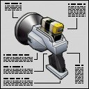

This device emits a sonic pulse that disrupts the digestive system of anyone pierced by these waves. It is tuned to the precise resonance frequency of certain human organs in the digestive track in order to create uncontrollable vomiting and convulsing. |